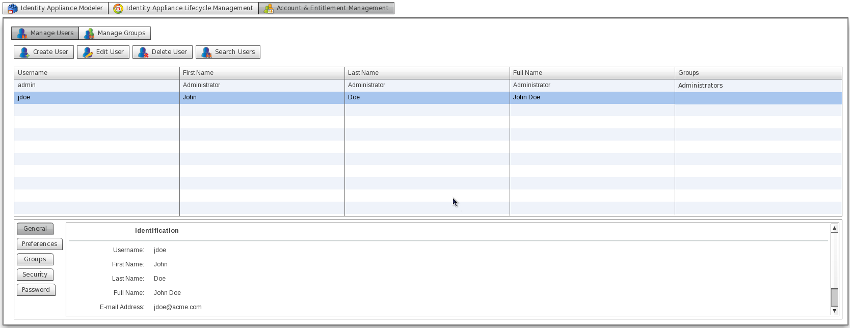
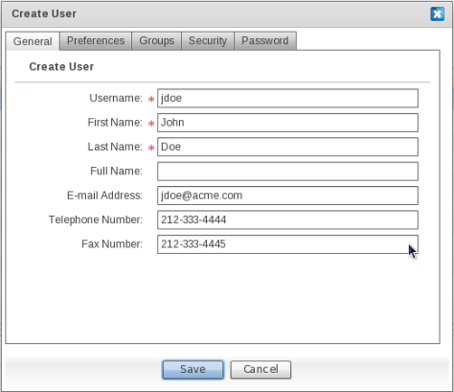
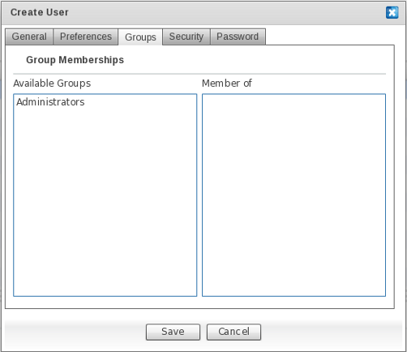
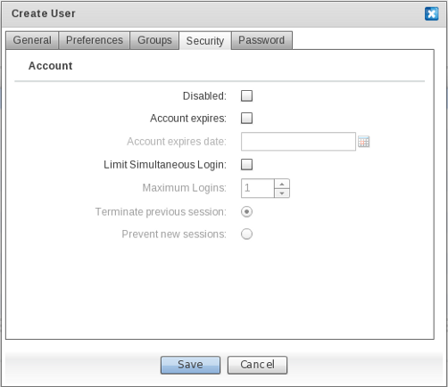
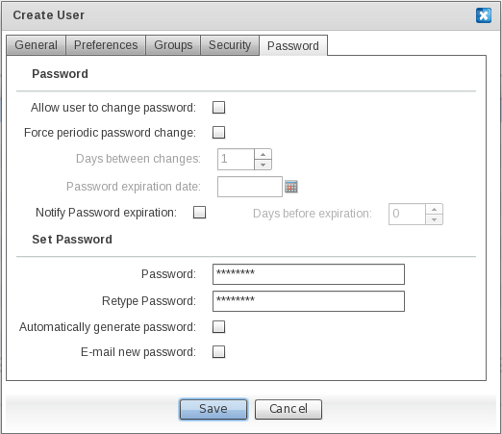
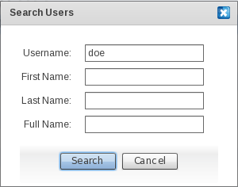
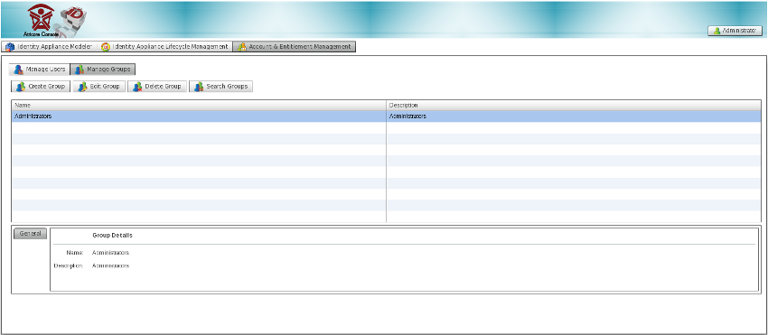
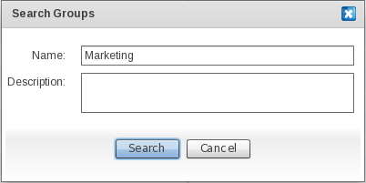

Generally speaking, when you add users and groups using the administration console, you're adding that data to the database on top of which the identity vault is founded. By default, even if you use an external identity source such as an LDAP (Lightweight Directory Access Protocol) directory, the users you add through the console will be added to JOSSO's identity vault and not to the external identity source.

A user account represents a person using the application's members of a circle of trust. Each user account has associated attributes which make up the person's profile. The console can be used to change any user's name and password, and to view and/or edit their profile information. It's also possible to disable a user (if, for example, that user is no longer involved) but it's best to preserve their profile information.
A group collects user accounts, typically in order to make it easier to grant all of the collected users certain entitlements. For example, you might create a group of human resources workers so that you can give them (and only them) permission to view potentially sensitive information about employees in a "Benefits" space. As an Administrator, you can add users and groups, and assign users to groups in order to determine their permissions.
To reach the Account Management screen, go to the Main screen and click on Account and Entitlement Management.
User profile information is entered on the General User Information screen.

Field Descriptions
|
Field |
Description |
|
Username |
The unique identifier for the person used for authentication. An example of a username is "jdoe". |
|
First Name |
A given name is that part of a person's name which signifies the person's primary individual identity. Sometimes also called a "given name" or (in some countries) a "Christian name". An example of a first name is "John". |
|
Last Name |
A last name is that part of a person's name which signifies the person's primary family association. Sometimes also called a "family name" or "surname". An example of a last name is "Doe". |
|
Full Name |
A full name name is a version of a person's name intended for display in a user interface. Sometimes also called a "display name" or a "formatted name". An example of a full name is "John Doe". |
|
E-mail Address |
An E-mail address is the value of a mailto: the URL at which a person or other entity can be contacted using standard electronic mail protocols. An example of an E-Mail address is "jdoe@acme.com". |
|
Telephone number |
A landline telephone number is a number for a traditional "PSTN" or "POTS" telephone. An example of a telephone number is 212-302-4434. |
|
Fax number |
A fax number is a number for a machine that handles facsimile transmissions. An example of a Fax number is 212-302-4450. |
A user's language preference is entered on the Preferences screen. This should be set to the default language that will be used in the application screens.

|
Field |
Description |
|
Language |
Everyone knows at least one language well (they are able to speak or write the language with a fair degree of fluency). Determination of whether someone knows a language "well" or "fluently" is left to the user. The value of this field MUST be an abbreviation for a language as specified in RFC 4646. An example of "Language" is "en". |
A user is assigned to one or more groups on the Groups screen. A user's entitlements are determined by their Group association.

To associate a user to one of the available groups, drag the group entry from the "Available Groups" column, and drop it into the "Member Of" column. If the association is successful, the target group will appear in the "Member Of" column.
To disassociate a user from a group, drag the group entry from the "Member Of" column and drop it into the "Available Groups" column. If the disassociation is successful, the target group will appear in the "Available Groups".
On the Security screen, preferences concerning securing the account may be specified in order to reduce the chances of unauthorized access.

|
Field |
Description |
|
Disabled |
Determines whether the user account is active. Select this checkbox to disable the account. This will block the user from authenticating against Identity Providers bound to an identity vault instance. |
|
Account Expires |
Determines whether the user account will expire. Select this checkbox to restrict the life span of the user account. The specific life span of the account is determined by the "Account expires date" field below. |
|
Account Expiration Date |
Determines the date upon which the account will expire. Enter a date in the .... format. |
|
Maximum Logins |
Maximum logins allowed from this user account. |
|
Terminate Previous Session |
Determines whether, when the user establishes a new session, the previous session has to be terminated. Select this checkbox to terminate the previous session when a new session using this account is established. |
|
Prevent new sessions |
Determines whether the user is entitled to establish a session against an Identity Provider bound to an identity vault instance. |
On the Password screen a user's credentials - namely a password - are provided in order to identify the person owning the account. In addition, preferences that will maintain the security of user credentials by enforcing password freshness and strength may be defined here.

|
Field |
Description |
|
Allow user to change password |
Determines whether the user will be able to update the password. Select this checkbox to allow the user to change their password. |
|
Force periodic password change |
Determines whether the user is informed that the password will expire. Select this checkbox to inform the user that their password will expire. |
|
Days between changes |
If the "Force periodic password change" option is selected, this field sets the maximum number of days before the user is required to change their password. |
|
Password expiration date |
The date the password for the user account will expire. |
|
Notify Password expiration |
Select this checkbox to enable e-mail notifications to the user regarding the approach of the password expiration date. |
|
Days before expiration |
Sets the desired number of days in advance of password expiration for the system to notify the user. |
|
Password |
The password for the user account. |
|
Retype Password |
Verification of the password for the user account. |
|
Automatically generate password |
Select this checkbox to automatically generate a strong password. |
|
E-mail new password |
Select this checkbox to have a new password e-mail sent to the e-mail address for this account. |
To provision a user account, click on the TBD: Insert Image button. Fill in the desired information and click "Save". Username, First Name, Last Name and Password are required.
To edit an existing user account, select the corresponding user entry in the user list and click the TBD: Insert Image button. Modify the fields as needed and click Save.
To search for a user entry, click on the TBD: Insert Image button. A search can be conducted based on Username, First Name, Last Name and Full name criteria. Complete the field with the chosen search criteria and click "Search". If the search is successful, entries for users matching the search criteria will be listed in the user accounts table.

To reach the Group Management screen, go to Account and Entitlement Management on the Main screen and click "Manage Groups".

To provision a group, click on the TBD: insert image button. Fill in the information needed and click "Save". The group name is required.
To search for a group, click on the TBD: insert image button. A search can be conducted based on the group name and description. Fill in the field corresponding to the chosen search criteria and click "Search". If successful, the entries for groups matching the search criteria will be listed in the groups table.

To edit an existing group, select the corresponding group entry in the group table and click the TBD: insert image button. Modify the fields as needed and click "Save".
To deprovision a group, select the target group entry in the groups table and click the TBD: insert image button.